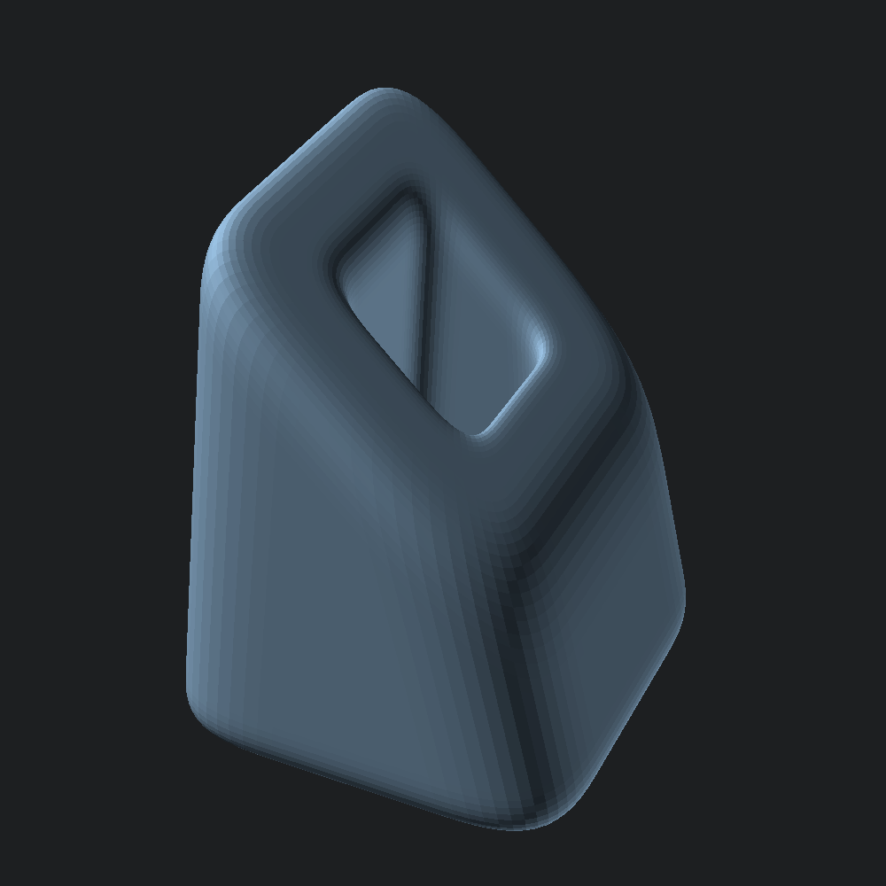

open Scad_mllet bot = Poly3.box ~center:true ~thickness:(v2 3. 3.) (v2 5. 5.)
let top = Poly3.translate (v3 0. 0. 5.) (Poly3.rotate (v3 0. (Float.pi /. 4.) 0.) bot)let mesh =
let outer =
Mesh.Prism.spec
~joint_top:(0.8, 0.8)
~joint_bot:(0.8, 0.8)
~joint_sides:(`Flat (1.5, 1.5))
()
and holes =
`Spec
(Mesh.Prism.spec
~joint_top:(-0.5, 0.5)
~joint_bot:(-0.5, 0.5)
~joint_sides:(`Flat (0.5, 0.5))
() )
in
Mesh.prism ~debug:false ~fn:16 ~outer ~holes bot topConvert our mesh into an OpenSCAD polyhedron and output to file.
let () = Scad.to_file "rounded_prism_tunnel.scad" (Mesh.to_scad mesh)